WebmorphR has plotting functions to make it easier to create reproducible figures from your stimuli.
When working interactively in an R Markdown document, the figures plot in the Viewer window, but will be shown in the document when you knit.
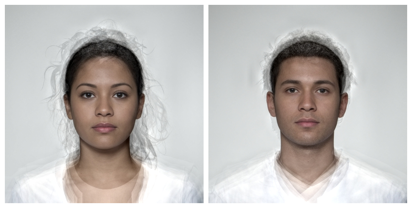
Borders and Background
You can add a border to each image using pad. Values less than 1 will set border width as a percentage of the image width, while values greater than 1 will set it as pixels. You can also change the border colour using fill.
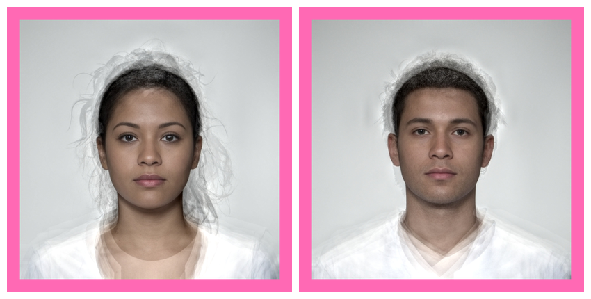
You can set different border sizes for the top, right, bottom and left sides (think “TRouBLe”). This can be useful for creating space for labels outside the image.
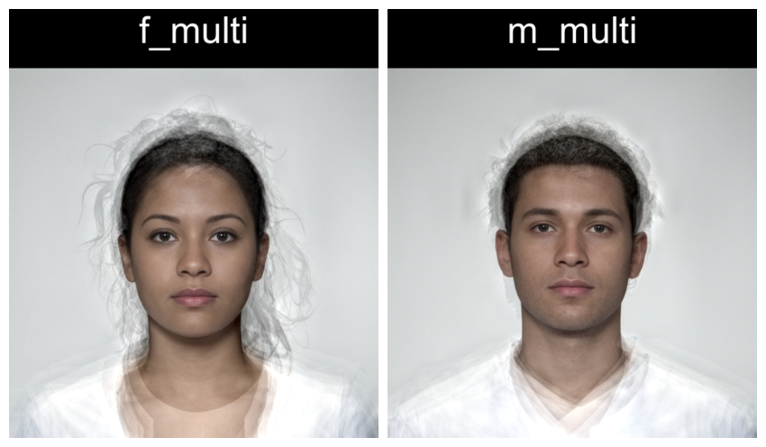
You can set the border colour separately for each image.
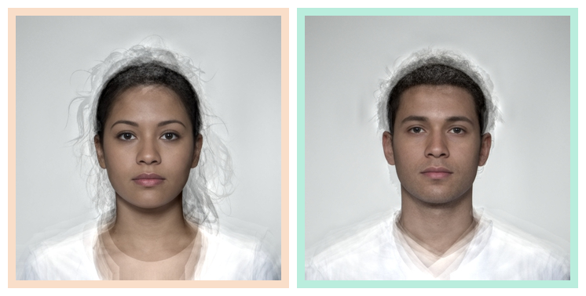
Rows and columns
Set nrow`` orncol` to control the number of rows and columns.
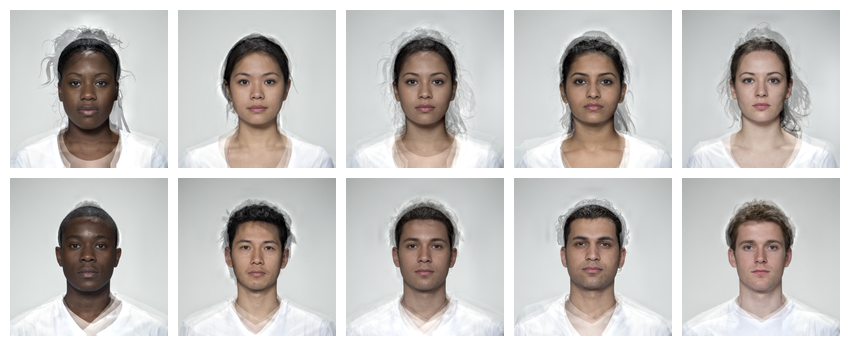
To make a multipart figure, you usually don’t want padding around the outside of an image, so set external_pad = FALSE. Set byrow = FALSE to distribute images by column.
ind <- comp[c(1:2,4:7,9:10)] %>%
plot(ncol = 2, byrow = FALSE, padding = 60, external_pad = FALSE)
c(comp[3], ind, comp[8]) %>%
resize(height = 500) %>% # make sure parts are the same height
plot(nrow = 1)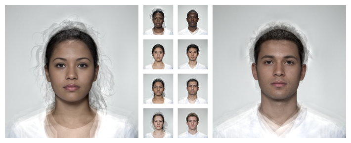
Delineations
Use the draw_tem() function to show the delineations. By default, points are translucent green circles and lines are translucent blue.
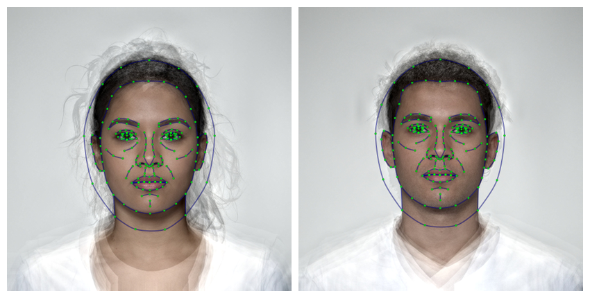
You can change the default colours and translucency with the line.color pt.color and line.alpha and pt.alpha arguments. Remove the image and set the background to grey by setting bg = "grey".
stimuli %>%
resize(1000) %>%
draw_tem(line.color = "grey", line.size = 2, line.alpha = 0.2,
pt.color = "red", pt.size = 4, bg = "grey") %>%
crop_tem(50) %>%
plot()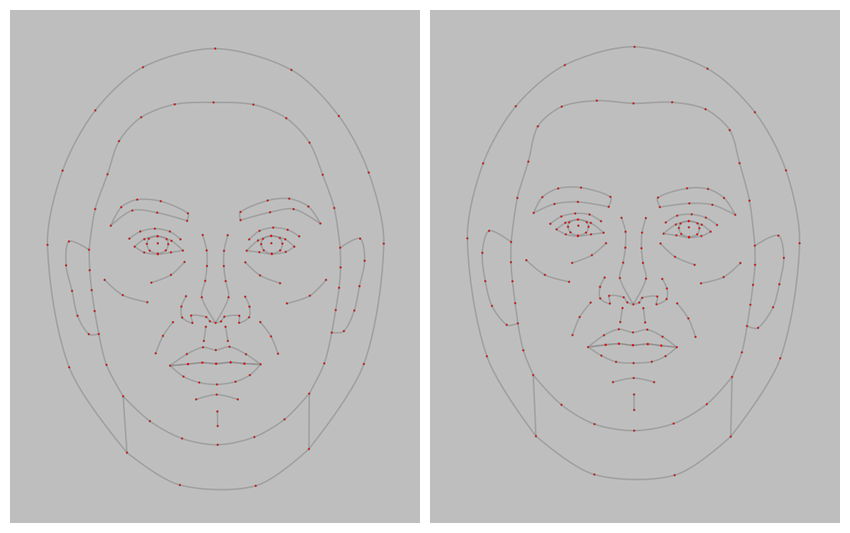
Delete some points
stimuli %>%
subset_tem(features("gmm")) %>%
draw_tem() %>%
plot()Labels
Label figure panels with the image name.
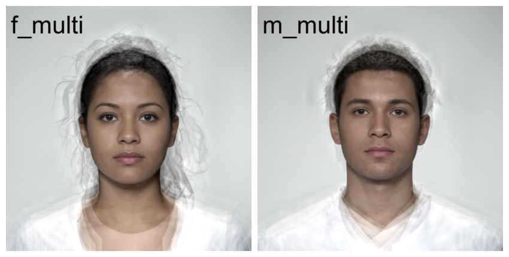
Use the setnames() function to set new names or set labels to a vector of labels to use.
demo_stim("composite") %>%
setnames(pattern = "f_", replacement = "Female ") %>%
setnames(pattern = "m_", replacement = "Male ") %>%
label() %>%
plot(nrow = 2)
Labels can be positioned with the gravity and location arguments from the {magick} package.
stimuli %>%
label(
c("Female", "Male"),
gravity = "northwest",
location = "+10+10",
color = c("darkgreen", "darkmagenta"),
size = 20,
style = c("normal", "italic")
) %>%
plot()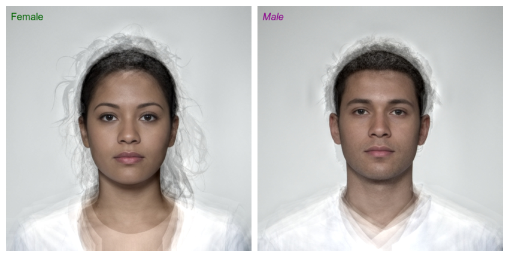
You can also get more fine control of label position.
stimuli %>%
label(TRUE,
color = "dodgerblue3",
size = 20,
weight = 700,
gravity = "southwest",
location = "+10+50",
degrees = 45
) %>%
plot()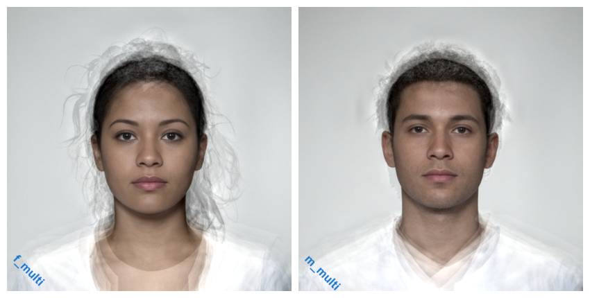
This script took 0.1 minutes to render all the included images from scratch.